Japan Philatelic Week – Art on Stamps
From the decorative screens and ukiyo-e imagery of 1975–1984 to the three 80-yen designs of 2012, this exhibition explores the visual richness of Japanese commemorative stamps.
1975–1977 · Folding screens and genre painting
The three illustrated groups evoke the richly populated world of Japanese folding screens: figures in elaborate dress, social encounters and decorative compositions. The gold-toned backgrounds emphasize the ornamental character of screen painting.
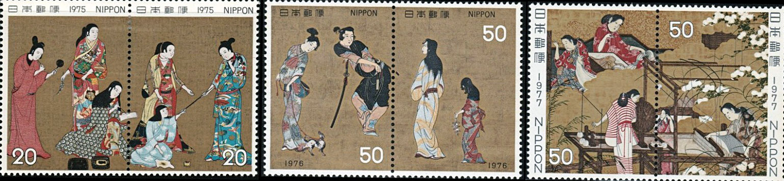
1978 · Figures in elegant costume
Two 50-yen stamps show women in richly patterned garments. Their elongated silhouettes and carefully arranged robes recall the tradition of bijin-ga, pictures of beautiful women.
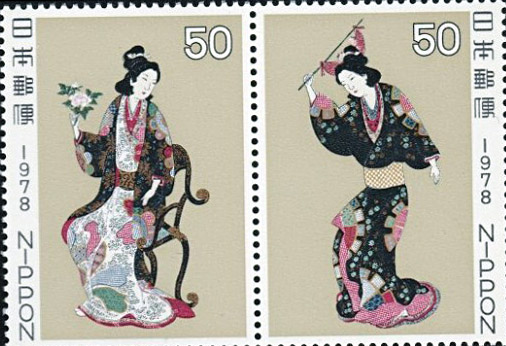
1979 · The art of costume
The paired 50-yen designs focus on standing figures and the expressive patterns of their robes. Textile design becomes an important part of the composition.
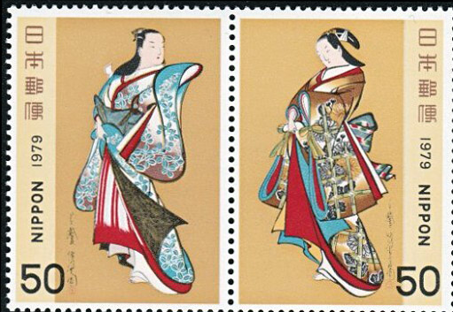
1980 · Women and landscape
Two 50-yen designs juxtapose graceful figures with water and natural motifs. The contrasting red and dark garments create a striking visual rhythm.
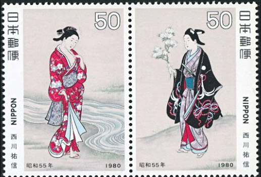
1981 · Figures in an architectural setting
The two 60-yen stamps share a continuous architectural background, inviting the viewer to read them together as a single composition.
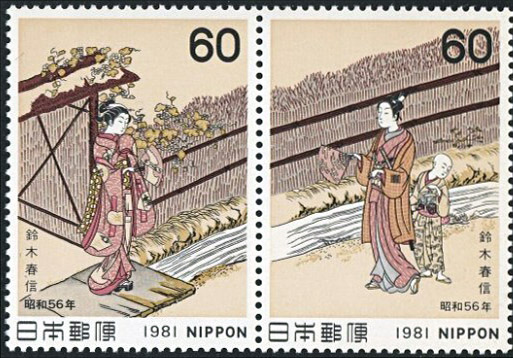
Early 1980s · Figures in a winter landscape
A joined pair of 60-yen stamps presents groups of women against a snowy setting. The composition extends across the perforations.
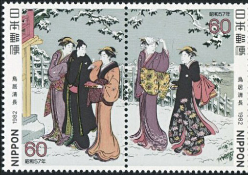
Early 1980s · Everyday life
This joined pair of 60-yen stamps depicts women working around large wooden vessels. Genre painting offers a glimpse of ordinary activities as well as clothing and material culture.
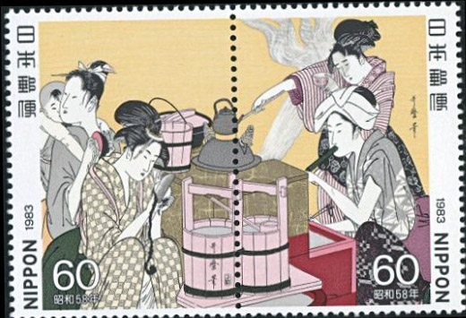
1984 · Kabuki actors
The expressive portraits recall Tōshūsai Sharaku, active in 1794–1795, whose actor prints are celebrated for their dramatic gestures and sharply individualized faces.
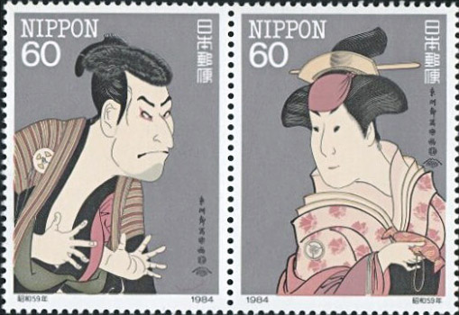
2012 · Flowering peonies
An 80-yen stamp reproduces a section of a decorative screen with flowering peonies. The flowers stand out against the gold-toned ground.
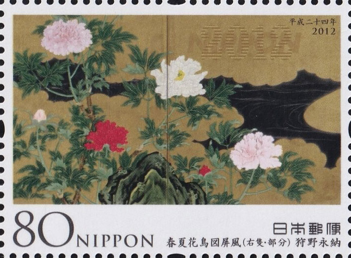
2012 · Flowers on a golden ground
A second 80-yen design continues the floral theme, with dense clusters of blossoms and foliage.
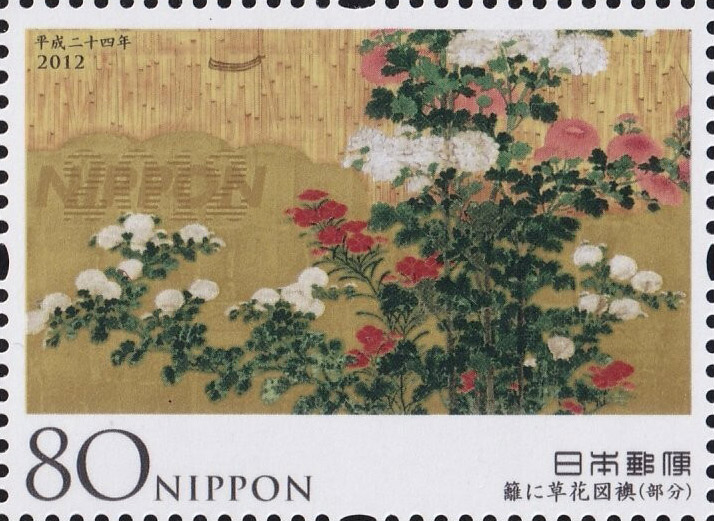
2012 · Dragon
The third 80-yen design presents a dragon among swirling forms. Its restrained palette contrasts with the floral screens.
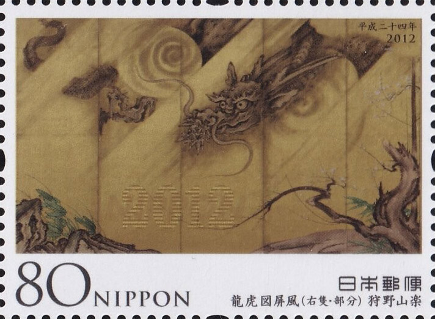
Further reading
Companion exhibition · Japan Philatelic Week · Japanese Art on First-Day Covers
Published November 27, 2026 · Victor Manta, USA. Dates and attributions not confirmed from the supplied material are left provisional.